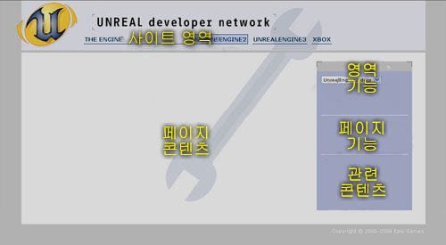

UDN
Search public documentation:
WhatToReadFirstKR
English Translation
日本語訳
Interested in the Unreal Engine?
Visit the Unreal Technology site.
Looking for jobs and company info?
Check out the Epic games site.
Questions about support via UDN?
Contact the UDN Staff
日本語訳
Interested in the Unreal Engine?
Visit the Unreal Technology site.
Looking for jobs and company info?
Check out the Epic games site.
Questions about support via UDN?
Contact the UDN Staff
먼저 읽어야 할 것
엔진 시작하기
Licensee File Repository 문서를 확인하여 최신 바이너리 릴리스를 받으십시오. 팀원 중 누군가가 이미 다운로드 했는지 여부도 확인하는 것이 좋을 것입니다. Epic Games의 공식 드롭에는 소스 및 바이너리(일반적으로 데모 콘텐츠와 함께)가 제공됩니다. 임시 또는 미리보기 드롭은 종종 소스만을 담고 있어 실제 제작 사용 보다는 다음 병합을 계획하는 데 사용되는 경우가 많습니다. Epic Game에서는 Windows PC, Linux PC와 Xbox용의 드롭만을 디자인합니다. Secret Level은 엔진의 Sony Playstation 2 콘솔 빌드를 유지시킵니다. 현재 Macintosh 용 버전의 최신 Unreal Engine 2 빌드는 없지만 Unreal Engine 2.5(UT2004로 알려짐)는 Macintosh에서 실행됩니다. 공식 코드 드롭 라이센스는 Licensee File Repository에서 찾아볼 수 있습니다.엔진 지원
문서
웹사이트 탐색하기
UDN 웹사이트는 사용자 여러분을 지원을 첫 번째 소스로 상세한 문서, 튜토리얼, 예제를 제공하여 사용자 여러분이 스스로 도움을 얻을 수 있습니다. UDN 웹사이트는 일반적인 레이아웃을 공유합니다.
- Site Areas 사이트 상단 전역에 있는 도구 모음에서 다양한 UDN 영역을 표시합니다.
- Page Contents 는 스크린 대부분을 차지하고 현재 문서가 실제로 표시되는 곳입니다.
- Area Features 은 오른쪽 도구 상자의 상단 부분에 위치하며 특수, 해당 지역 전용, 유사 검색, 이메일 통지, 마스터 인덱스가 포함됩니다.
- Page Functions 은 오른쪽 도구 모음의 다음 섹션에 위치하고 페이지 편집, 파일 첨부, 인쇄할 수 있는 영역 표시 등 문서와 관련된 항목을 포함합니다.
- Related Content 는 오른쪽 도구 모음의 아래에 위치하고, 다른 문서와 현재 항목과 관련된 문서의 범주를 제공합니다.
UDN 문서에서의 경고
UDN 문서는 실용성과 효율성을 중시하고 있습니다. 사용자가 최대한 빠르고 쉽게 조작할 수 있는 것을 목표로 하고 있습니다. 이를 위해서는 엔진이 선호하는 방식인 "Unreal 방식" 으로 작업을 수행하는 것을 권장드립니다. 때로는 이것이 비생산적 또는 우회로 돌아가게 만들거나 또는 보기에 현명한 방법이 아니라고 생각될 지도 모릅니다. 그러나 엔진은 이미 성립된 시스템입니다. 대부분의 경우 왜 특정 인스턴스에는 특정 방식으로 진행되어야 하는가에 관한 실용적인 이유가 있습니다. 당사가 제공하는 솔류션은 일반적으로 Unreal 엔진의 콘텐츠 범주 에서 가장 최선의 실용적인 해결 방식입니다. 앞서 말했다 싶이, 독립 시스템으로 개발된 것은 Unreal보다 성능이 높고, 사용하기 쉽고, 효율적일 수 있습니다. 하지만 나머지 코드베이스와 작동하도록 하고 만족스러운 프레임 속도로 실행되도록 할 때 셀수 없는 많은 문제를 초래할 수 있습니다. 그러므로 사용자 여러분께서 핵심 엔진을 조작하는 것을 최소화하게 하기 위해 당사가 제공한 솔루션을 사용하실 것을 권장드리고 이 솔루션은 앞으로 출시될 빌드와의 작업 및 병합에 있어 여러분의 무수한 시간과 노력을 덜어줄 것입니다. 라이센스 받은 기술을 사용하는 모든 프로젝트에서와 같이 여러분의 변경 사항(또는 전면적인 하위시스템 교체)이 초래하게 될 이론적 개선에 업데이트된 코드를 병합할 시간과 노력을 고려해야 합니다.문서 읽기
권장 소프트웨어 및 권장 하드웨어 를 사용하여 설치를 끝낸 후 목차 목록에 있는 Codedrop-Specific Support (코드 드롭 전용 지원) 상단에 있는 최신 CodeDropXYZ 페이지를 확인해 주십시오. 이것은 최근 공식 코드 드롭 릴리스로써 다운로드 링크 버그 수정 방법이나 알려진 문제를 포함한 오류 정정을 제공합니다.프로그래머 및 기타 기술자의 경우
드롭을 구매했으면 먼저 새 프로젝트 준비 페이지를 참조해 주십시오. 여기서는 코드베이스를 해체하고 사용자 코드 및 구성 요소와 다시 통합하는 방법을 차례로 설명됩니다. 이것은 현재 제작 중입니다. 목차 목록의 Toolchain Support 영역에는 유용한 여러 문서가 나열되고 있습니다. Visual SourceSafe 설정하기에서부터 Vtune까지 엔진과의 작업이 손쉽도록 노력하였습니다. 거기에서 특정 기능에 대해 알고 싶은 경우 참조가 되도록 목차의 주요 부분을 기능 순으로 정렬시켰습니다. 뼈대 시스템 HUD 등과의 작업하기와 같은 몇 가지 튜토리얼이 제공됩니다. 목록 하단 근처에는 Licensee Code Pool? 페이지가 있습니다. 본 사이트로 사용자 여러분의 일반적인 기능을 게재하는 기여를 해 주십시오. 본격적으로 엔진을 사용한 작업을 시작하기 전에 Licensee File Extensions 목록에 프로젝트 파일 확장과 Gamespy ID를 추가하는 것을 잊지 마십시오. 원하는 문서를 요청하고 싶은 경우 주저하지 말고 UdnStaff 페이지에 추가해 주십시오.텍스처 아티스트의 경우
2D 아티스트의 경우 레벨 디자이너는 사용자 여러분의 raw 텍스처를 직접 사용하지 않고 재질(쉐이더와 같이)에서 사용할 것이므로 Texture Specifications? 과 Texture Comparison 로 시작한 다음 Material Tutorial 를 살펴 보십시오.모델 제작자의 경우
모델 제작자는 현재 대부분의 뼈대 애니메이션 문서가 위치한 페이지의 하단 부분인 Tools 역영을 바로 살펴보실 수 있습니다.레벨 디자이너의 경우
레벨 디자이너와 레벨 아티스트가 나머지 부분에 해당합니다. UnrealEd Interface 로 시작해서 순서대로 Primitives 에 있는 문서들을 살펴보실 것을 권장드립니다. 그런 다음 다시 돌아가서 Basics 섹션에 있는 나머지 문서를 검토하십시오. 기본 브러시 및 기타 물건을 구축하는 방법을 알고 있으면 좀 더 이해하기가 수월할 것입니다. 또한 아직 확인하지 않았다면 Intro To UnrealEd? 문서를 살펴보십시오.UnProg 및 UnEdit 메일링 목록에 등록하기
귀하의 개발팀장은 UnProg? and/or UnEdit? 기술 메일링 목록에 이미 귀하를 등록했을 수 있으나 그렇지 않은 경우 UDN 계정 관리자 웹페이지인 https://udn.epicgames.com/udnusers/로 로그인하여 구독 등록할 수 있습니다. 의문점에 대한 답변을 찾을 때 아주 유용할 수 있는 아카이브로의 링크를 포함한 자세한 내용을 UnProg? 및 UnEdit? 페이지에서 확인해 주십시오. 현재 진행중인 주별 요약도 UnProgTraffic? 및 UnEditTraffic? 페이지에서 찾아볼 수 있습니다.IRC: 회원 가입하기
좀 더 개인적인(하지만 그렇다고 해서 더 빠르다고 할 수는 없음) 지원이 필요한 경우 비교적 안전한 보안 환경에서 채팅을 할 수 있도록 라이센스 소유자에 대한 비공개 IRC (Internet Relay Chat: 인터넷 릴레이 채팅) 서버가 유지됩니다. UDN IRC 서버 연결에 대한 자세한 내용은 UnDev IRC 를 참조하십시오. 권장 소프트웨어 목록에서 자신에게 적합한 IRC 클라이언트를 찾을 수 있습니다. IRC에 관한 일반 정보는 http://www.irchelp.org/를 확인해 주십시오.문제를 발견하면
게재된 문서를 살펴보는 과정에서 만일 실수를 발견한 경우 또는 이해하기 어려운 표현을 발견한 경우, 수정하십시오! 각 페이지 오른쪽에 위치한 페이지의 기능 도구 상자에서 Edit 버튼이 있어 변경 사항을 업데이트할 수 있고 UDN 향상시킬 수 있게 하여줍니다. 일반 텍스트 형식이므로 복잡한 조작이나 새 문서 업로드가 필요 없습니다. 새 문서 만들기도 매우 간단합니다. 콘텐츠 목록 하단의 링크를 따라 실행하여 주십시오.문제를 발견하면
UDN에서 필요한 문서를 찾을 수 없는 경우 실행하는 "문제 질문하기" 방법에는 다음의 3 가지 단계가 있습니다.- UnProg? 아카이브를 확인하십시오. 왼쪽에 위치한 도구 상자 영역에 있는 검색 버튼을 사용하거나 UnProg? 페이지의 링크를 통해 검색하실 수 있습니다. 누군가 이미 동일한 질문을 하지 않았는지 확인하십시오.
- #UnDev IRC로 질문 하십시오. 모두 빠쁘거나 자고 있는 경우도 있지만 운이 좋다면 즉시 답변을 얻을 수 있습니다. 그리고 정말 운이 좋다면 즉시 받은 답변이 정답 일 수도 있습니다.
- UnProg? 또는 UnEdit? 으로 질문을 게시하십시오. Epic의 누군가가 최대한 빨리 답변 드릴 것입니다. 만약 단순히 무언가가 기존 문서에서 누락된 경우 오른쪽에 있는 도구 상자의 Edit 버튼을 사용하여 직접 추가할 수 있습니다.